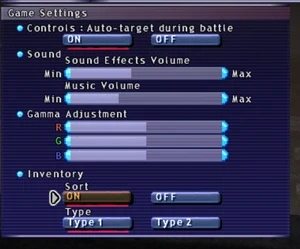
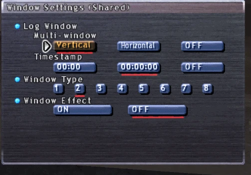
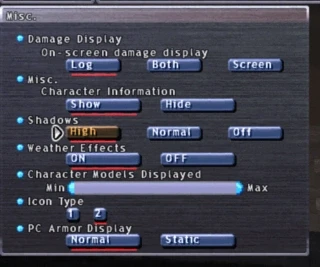
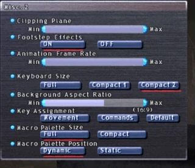
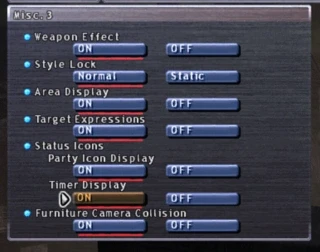
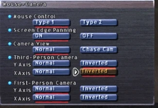

Level 75 reference · Zenith rules
How to setup the UI
Has it been a while since you booted up the client?
Thankfully, there’s been several nice updates to the UI over the years. It’s not perfect, but here’s some suggestions on tweaks on first launch.
To get started, pop open the menu (the - on the numpad, or the number row), left arrow over to the second menu, and go down to Config.
Game Settings


First off, turn down those music and sound effects. Holy heck, the game’s launcher is LOUD.
Second, they’ve added an inventory AUTO SORT. Turn that on and set it to Type #1 if you want it to sort alphabetically or Type #2 if you want it to sort by item type and auto-stack your items.
Window Settings


You can now have TWO chat windows with Multi-window, turn that on! I recommend vertical if you’re on a larger screen; horizontal if on a smaller laptop.
Feel free to configure your Timestamp and window type preferences.
For performance, set your Window Effect to Off. It REALLY speeds up the navigation speed though the menus.
Misc 1, 2, and 3


You can turn your Shadows on High to get a better visual quality. This one is personal preference. I leave mine on normal as I find shadow rendering causes frame rate drops.
You can turn off Weather Effects if you notice your FPS dipping quite often (though keep in mind, weather is important in FFXI).




On this one, set your Background Aspect Ratio to match your monitor (most are 16:9 these days).
On this one, set your Background Aspect Ratio to match your monitor (most are 16:9 these days).
You can turn off Footstep Effects, or that ‘pat pat pat’ sound you make as you run. Personal preference.
Some great quality of life settings on here that are now built-in to the FFXI UI!
Some great quality of life settings on here that are now built-in to the FFXI UI!
Turn on Area Display to be able to see a blue circle when casting AOEs with secondary targets (stnpc and stpc macros).
Turn on Party Icon Display to see status effects on your party members when you target them. Also enables seeing party members buffs when you use /focustarget
Turn on Timer Display to see a remaining timer count under your own status effects.
Mouse and Camera


Turn off Screen Edge Panning if you find your camera constantly spinning
Invert your cameras to match your preferences. FPS players generally like inversion, there's no right answer, just do what feels right for you
Adapted from Eden Wiki: FFXI UI Setup Guide · Contributors and history · CC BY-SA 4.0. Revision 44323. Layout, links and optional background text adapted for Zenith.